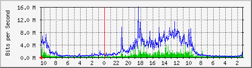
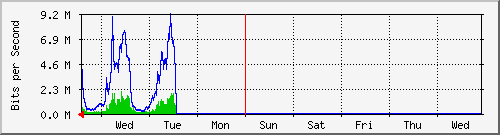
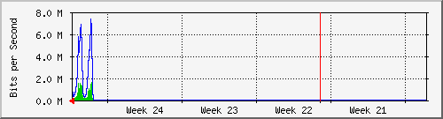
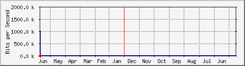

nuevo2
| System: | FW-CDP-E3.default.domain.invalid in 10.1.32.20 |
| Maintainer: | |
| Description: | Adaptive-Security-Appliance-'outside'-interface |
| ifType: | ethernetCsmacd (6) |
| ifName: | outside |
| Max Speed: | 125.0 MBytes/s |
| Ip: | 201.144.84.98 (static.customer-201-144-84-98.uninet-ide.com.mx) |
Estadísticas actualizadas el Jueves 24 de Junio de 2021 a las 10:30,
'FW-CDP-E3.default.domain.invalid' ha estado funcionando durante 19 days, 9:38:25.
Gráfico diario (5 minutos : Promedio)

|
Máx |
Promedio |
Actual |
| Entrante: |
4413.1 kb/s (0.4%) |
652.0 kb/s (0.1%) |
998.7 kb/s (0.1%) |
| Saliente: |
15.9 Mb/s (1.6%) |
2386.9 kb/s (0.2%) |
4211.4 kb/s (0.4%) |
Gráfico semanal (30 minutos : Promedio)

|
Máx |
Promedio |
Actual |
| Entrante: |
2043.0 kb/s (0.2%) |
719.1 kb/s (0.1%) |
1249.2 kb/s (0.1%) |
| Saliente: |
9149.3 kb/s (0.9%) |
2823.5 kb/s (0.3%) |
4991.3 kb/s (0.5%) |
Gráfico mensual (2 horas : Promedio)

|
Máx |
Promedio |
Actual |
| Entrante: |
1612.3 kb/s (0.2%) |
692.4 kb/s (0.1%) |
326.9 kb/s (0.0%) |
| Saliente: |
7330.6 kb/s (0.7%) |
2710.4 kb/s (0.3%) |
998.0 kb/s (0.1%) |
Gráfico anual (1 día : Promedio)

|
Máx |
Promedio |
Actual |
| Entrante: |
442.6 kb/s (0.0%) |
442.6 kb/s (0.0%) |
442.6 kb/s (0.0%) |
| Saliente: |
1980.6 kb/s (0.2%) |
1980.6 kb/s (0.2%) |
1980.6 kb/s (0.2%) |
| VERDE ### |
Tráfico entrante en Bits por segundo |
| AZUL ### |
Saliente:going Traffic in Bits per Second |